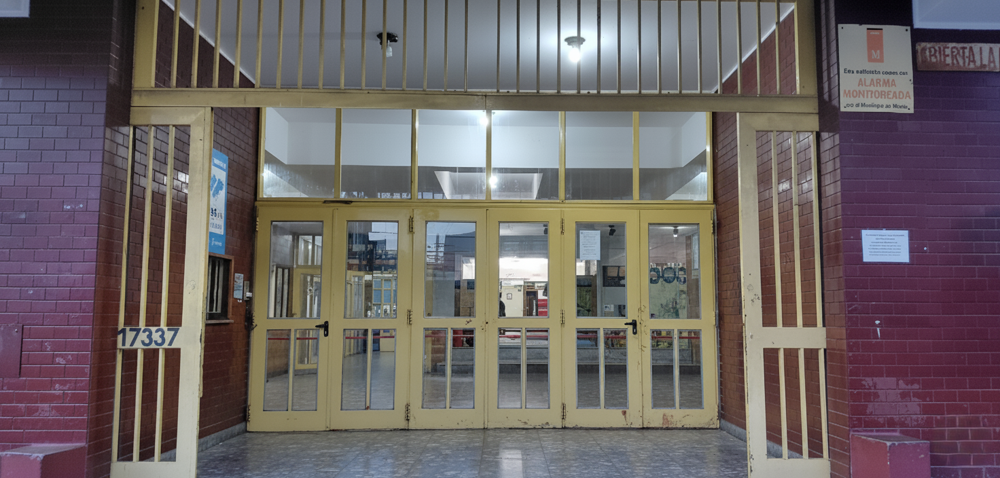

E.E.S.T N6 Chacabuco
Somos una escuela técnica pública y gratuita ubicada en Morón, orientada a la formación académica y profesional de nuestros estudiantes
Somos una escuela técnica pública y gratuita ubicada en Morón, orientada a la formación académica y profesional de nuestros estudiantes
Formación inicial con conocimientos en carpintería, soldadura, electricidad y dibujo técnico. Desarrollamos habilidades prácticas para crear y analizar proyecto simples
Formación en mecánica, mantenimiento y diagnóstico automotor, con práctica en vehículos reales y herramientas actuales
Estudio de sistemas electromecánicos y desarrollo de habilidades en motores, circuitos y control. Aplicamos tecnologías actuales en entornos industriales
Formación en programación, redes y sistemas informáticos. Desarrollo de soluciones digitales y manejo de herramientas tecnológicas actuales
Desarrollo de software mediante distintos lenguajes y lógica de programación. Creación de aplicaciones y resolución de problemas prácticos


El establecimiento educativo se encuentra ubicado en Avenida Rivadavia 17337, entre las calles General Juan Martín de Pueyrredón y General Cornelio Saavedra, en la localidad de Morón, Provincia de Buenos Aires.
Información no disponible. Se recomienda consultar directamente con la institución.
Al finalizar el tercer año del ciclo básico, los alumnos que ingresan al ciclo superior pueden optar por una especialidad que definirá su orientación técnica. Las especialidades ofrecidas son: Programación, Electromecánica, Informática y Automotor. Esta elección determina la formación en talleres específicos. Asimismo, al concluir el sexto año e ingresar a séptimo, los estudiantes realizan prácticas profesionalizantes orientadas a su inserción en el ámbito laboral.
Durante el ciclo básico (1.º a 3.º año), los talleres abarcan diversas áreas que permiten a los alumnos adquirir conocimientos prácticos mediante el uso de herramientas y equipamiento. Entre ellos se incluyen Carpintería, Soldadura, Hojalatería, Dibujo Técnico, Electricidad y Tornería. A partir del ciclo superior, los estudiantes se especializan en una de las orientaciones mencionadas anteriormente.
Se establece un código de vestimenta que incluye pantalones largos de jean en tonos azules, remeras con mangas que cubran el abdomen y buzos de colores lisos y discretos. El calzado debe ser cerrado (zapatos o zapatillas). Se sugiere el uso de indumentaria institucional. Para los talleres, es obligatorio el uso de guardapolvo por razones de seguridad. No está permitido el uso de bermudas, shorts, ojotas, calzas, musculosas, camisetas deportivas, gorras ni accesorios como aros o piercings. Para Educación Física, se permite vestimenta deportiva adecuada, manteniendo criterios de comodidad y cobertura.
No es obligatorio contar con herramientas propias, aunque en determinados talleres se puede solicitar o recomendar el uso de elementos específicos como guardapolvo, guantes u otras herramientas.
Las prácticas profesionalizantes de séptimo año varían según la especialidad elegida. El cursado teórico se desarrolla en horario vespertino (de 18:00 a 22:20), mientras que las prácticas pueden realizarse en turno mañana (8:00 a 12:00) o turno tarde (14:00 a 18:00), permitiendo al alumno adquirir experiencia en contextos similares al ámbito laboral.
El turno vespertino corresponde al horario comprendido entre las 18:00 y las 22:20, destinado principalmente a estudiantes de séptimo año y, en algunos casos, de sexto año.
La autorización para el retiro de alumnos por parte de adultos responsables se realiza mediante el cuaderno de comunicaciones, consignando nombre, apellido y DNI del autorizado. Alternativamente, puede gestionarse a través del preceptor, quien habilita el registro de responsables.
El cuaderno de comunicaciones se adquiere en la cooperadora de la institución. Se recomienda completar los datos personales, de contacto y de salud correspondientes.bre, apellido y DNI del autorizado. Alternativamente, puede gestionarse a través del preceptor, quien habilita el registro de responsables.
Los alumnos pueden ingresar con alimentos para consumir durante el horario de almuerzo (12:00 a 13:30). Además, la institución ofrece desayuno durante el recreo matutino, dispone de microondas y cuenta con un buffet para la compra de alimentos.